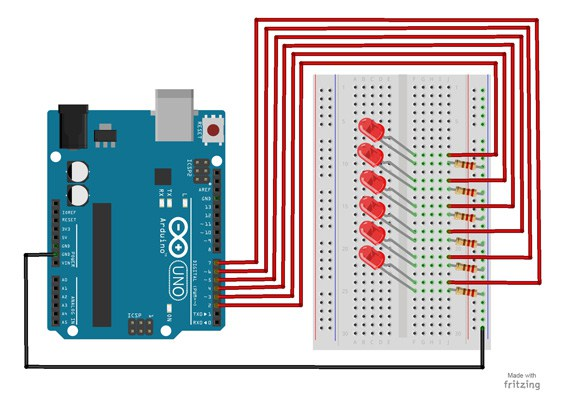

This project will blink 6 LEDs, one at a time, in a back and forth formation. This type of circuit was made famous by the show Knight Rider which featured a car with looping LEDs.
Parts Needed
- (1) Arduino Uno
- (1) USB A-to-B Cable
- (1) Breadboard – Half Size
- (6) LED 5mm
- (6) 220 Ω Resistor
- (7) Jumper Wires
Project Diagram
Project Code
- Connect the Arduino board to your computer using the USB cable.
- Open project code – Circuit_06_Scrolling
- Select the board and serial port as outlined in earlier section.
- Click upload button to send sketch to the Arduino.